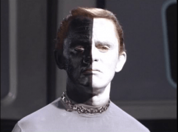

After the groundbreaking Star Trek original series (TOS) was cancelled, the franchise went dormant. Afterwards, a film series began in which the even-numbered movies were good. Then it returned to television with The Next Generation (TNG). After it ran its course, other spinoffs were launched. Then it went off the air for a while, but a rebooted movie series began; apparently the odd-numbered films are now the good ones. Quite recently, Star Trek: Discovery (STD) marked the franchise’s return to television.
The plot (spoilers ahead)
I haven’t followed the shows after TNG because I gave up television. However, I caught the first three episodes of STD. Note well, it’s a prequel to TOS, predating it by ten years. The Klingons have been dormant for a century, effectively disappearing. However, they’ve hatched a plot to “remain Klingon”. Pretty scary, right?
Then we meet the main Federation protagonist, a Black lady with a soft butch appearance named Michael. (Why not Janet?) She’s Spock’s adopted sister—another surprise relative like Sybok in the fifth movie. She’s a survivor of a Klingon attack (apparently they’re not so dormant after all). Accompanying the Captain—a soft butch Asian lady—she shoots holes down a well to frack it for some thirsty space bugs. A radiation field dried up the water table. (Gamma rays don’t do that.) I guess this was for character development?
Back aboard ship, they note a strange anomaly. You already know what’ll happen… Michael puts on a space suit to investigate, despite an intense radiation field. (Don’t they have robotic space drones?) After finding a large, mysterious object, a Klingon pops out. After two seconds of combat, he gigs himself with his Swiss glaive, and Michael is injured and adrift. The Klingons then argue about who should be the boss. That’s because the Chief Ninja Turtle himself went to chase off the intruder, alone and armed with a medieval weapon.
Michael awakens back aboard. She leaves Sick Bay after being warned that not completing the radiation treatment would mean death, yet survives. A Klingon warbird arrives, at first in stealth mode. (Didn’t the Romulans invent the cloaking device?) After having kicked the anthill and making themselves sitting ducks, they argue about what to do. Amidst the crisis, Michael steps out for a quick private call with Sarek, her Vulcan adoptive dad. She urges the Captain to shoot preemptively. To settle the argument, Michael ineffectively performs a Vulcan nerve pinch. (Smooth move…) After dithering too long, several more Klingon vessels arrive. Oops.
The second episode briefly shows Michael joining the crew, and Sarek warns her to behave. After the flashback, Michael speculates that the Klingons are trying to unite. The Captain isn’t amused—understandably, given the nerve pinch stunt—and Michael goes to the brig. Following a quick Klingon pow-wow, other Federation ships arrive.
A battle breaks out, badly damaging the ship. A clueless redshirt dies. Michael has a quick psychic pow-wow with Sarek. The battle resumes, with dirty tricks on both sides. Then Michael and the Captain stage a botched raid on the Klingon ship. The Captain’s remarkably short memory about her second-in-command’s competence proves fatal. Michael gets a life sentence, unsurprisingly.
The third episode takes a radical departure, likely leading to the show’s main premise. They’ve developed fungus allowing teleportation. (It’s already available in Amsterdam.) My crystal ball predicts future hand-wringing about bioethics and WMDs.
Analysis
Star Trek casting always has been pretty diverse. That’s inoffensive, unlike the preachy political messages. However, this time they’re really laying it on thick. (One of my girlfriends wondered what’s the deal with two chicks commanding a starship.) There’s even a fish-man from Innsmouth with a spidey-sense for danger, actually STD‘s most interesting character. Fortunately, there’s no Wesley Crusher, avoiding the Waltons In Space shtick from TNG.
As for the much-discussed “social justice” agenda, the greater part concerns the Klingons. Traditionally, they’re the Russians—pretty grouchy in TOS, later wary but mellowing out. However, in STD, they’re bad guys again, now representing Trump supporters. (Gee, thanks!) It’s no secret that the tagline “remain Klingon” is based on “make America great again“.
TOS had classically structured storylines, borrowing heavily from theater. TNG got into more complex story arcs, with plot crowbars aplenty. With STD, the special effects are pretty good, but they really need to stop using “idiot ball” plot devices.
Sometimes it seemed the screenwriters weren’t too familiar with the old shows. Really, the entertainment industry should recognize that adding to a long-standing franchise isn’t merely creating a product. It’s a dramatic work which should flow smoothly with the others in the series and live up to audience expectations, building onto what worked before. Good development goes a long way.
What do the Klingons want?

They’re this caricature, updated for The Current Year.
They wish to solidify political unity in order to defend their sovereignty and culture—in short, to “remain Klingon”. They believe—fairly plausibly—that the Federation won’t let them live by themselves, but rather incorporate them into their interstellar empire where they’ll lose their independence and way of life.
The Federation’s sociopolitical structure isn’t explained in great depth, but money is obsolete. Food (and presumably other consumer goods) are instantly available via replicators. Advanced technology finally has made fairy tale Socialism work. Likely the public is either dying of boredom or goofing off on holodecks all day. However, the Klingons aren’t feeling the love about all that.
Despite frequent interstellar meddling, TOS and TNG still paid lip service to the “Prime Directive” noninterference principle. However, the Federation in STD basically plays the same role the Borg did in TNG—“Prepare to be assimilated, resistance is futile”. Since they’ve unwittingly staked claim to Klingon territory, a gentlemanly resolution to the border dispute isn’t in the cards.
The Federation always represented a globalist vision of the future, basically the United Nations in space. Thus, globalists are the Borg of today, and the form of Socialism they want for us won’t be the fairy tale variety.
Remain Klingon, my friends.
Read More: 9 Things That Geek Feminism Ruined